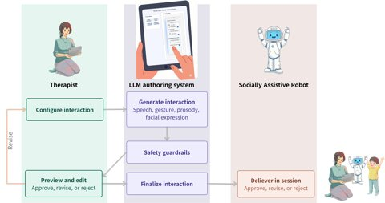
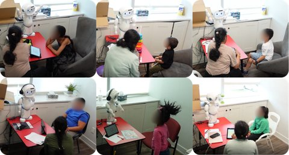
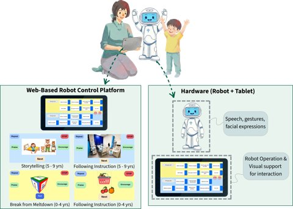
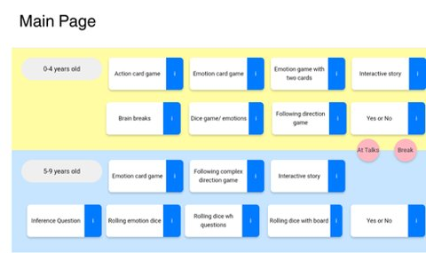
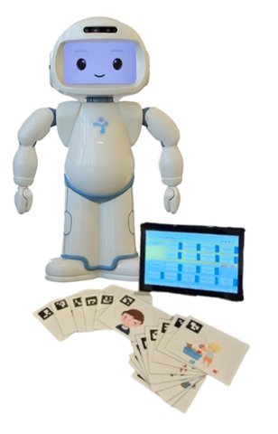
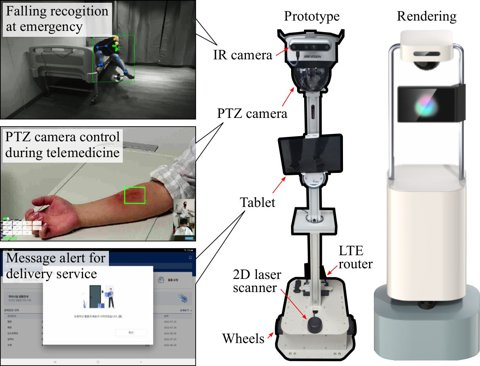
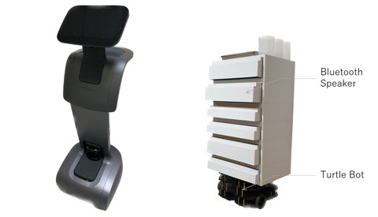
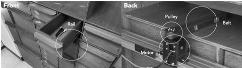
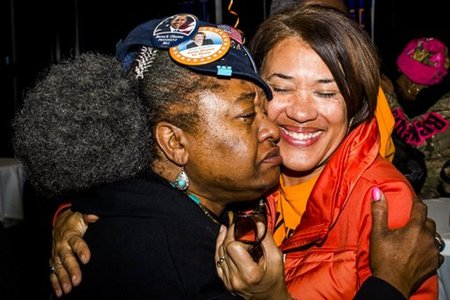

PhD Candidate, Electrical and Computer Engineering, University of Waterloo
I am a PhD candidate in the Social and Intelligent Robotics Research Lab (SIRRL) at the University of Waterloo, advised by Prof. Kerstin Dautenhahn.
I study why socially assistive robots rarely survive outside research labs, and how to change that. Over three years of co-design with speech-language therapists and a 6-month in-the-wild deployment with 9 children at a pediatric speech therapy centre, I found the main barrier: every new or updated robot interaction still needs a researcher. I am now building an LLM-powered authoring system that lets therapists create, customize, and iterate on robot interactions themselves, without engineering support.
Before Waterloo, I received my M.S. in Brain and Cognitive Engineering from Korea University, advised by Prof. Christian Wallraven, where I compared human and deep-network perception of emotion in context. I was also a research intern at KIST, working on multi-robot hospital systems and human-robot trust. I hold a B.E. in Multimedia Engineering and a B.A. in Child Studies from Seoul Women's University.
Research keywords: human-robot interaction, socially assistive robots, end-user authoring, LLM-powered systems, co-design, in-the-wild deployment
My research focuses on making socially assistive robots sustainable in real-world settings: co-designing with domain experts, deploying robots long-term in the wild, and giving non-technical users authoring control over robot behavior.

An authoring system that gives clinicians direct control over LLM-driven robot interactions, so they can create, customize, and iterate on therapy content without engineering support.

Advanced Robotics, 2026
A 6-month deployment with 9 children in an active speech therapy clinic, where the therapist operated the robot independently across repeated sessions.

ACM/IEEE HRI 2026 Pioneers (acceptance rate 23%)
Extended abstract on the path from co-design to long-term deployment, and why end-user authoring is the next step for scalable socially assistive robots.

IEEE RO-MAN 2025
How co-design sessions and personas built with speech-language pathologists shaped the robot therapy games used in the clinic.

ICSR 2024
An 18-month co-design process with SLPs to build a robot-assisted therapy system around their clinical needs.

IEEE/RSJ IROS 2023
A multi-robot system for hospital isolation wards covering telemedicine, emergency alerts, and delivery, evaluated with medical staff.

IEEE/RSJ IROS 2023
How perceived hierarchies between robots in a team affect people's trust and their evaluation of the service.

IEEE RO-MAN 2023
Whether people prefer robots that act proactively or ones that wait for specific verbal commands, and what that means for keeping users in control.

ACM ICMI 2022 Companion
Human perception experiments compared against CNN-based contextual emotion recognition on in-the-wild images.